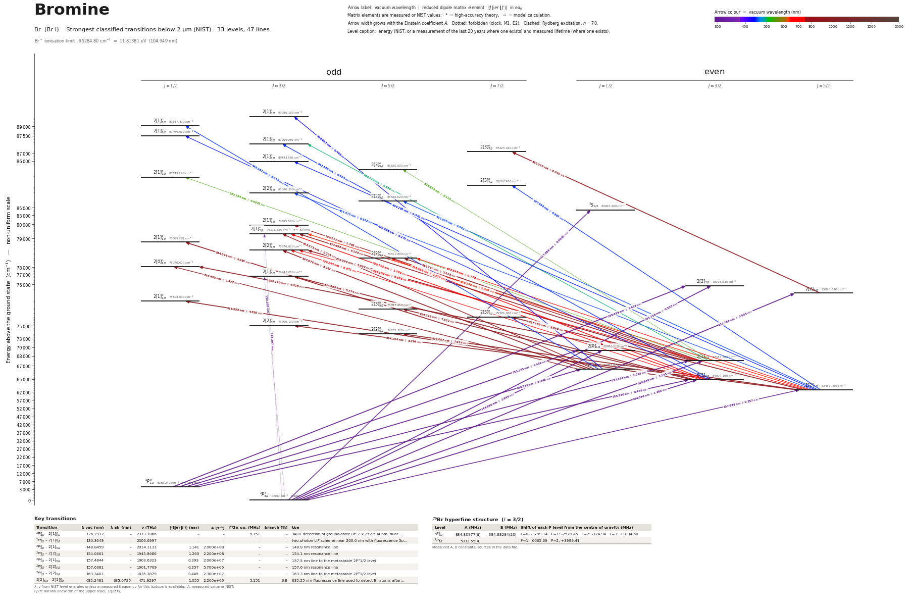

Bromine energy level diagram
Energy levels and transitions of neutral bromine (Br I): the 47 strongest classified lines below 2 µm from the NIST Atomic Spectra Database and the 33 levels they connect, each line with its vacuum wavelength, frequency and, for 45 of them, the reduced dipole matrix element derived from the NIST transition rate. Measured lifetimes, transition rates, hyperfine constants and isotope shifts from the literature are included, each with its citation.
Hover a line or a level to isolate it, click to keep it selected. Scroll to zoom, drag to move.

Download: diagram (PDF) diagram (SVG) transitions (CSV) levels (CSV) source code

Key transitions of bromine
| Transition | λ vac (nm) | λ air (nm) | ν (THz) | |⟨J‖er‖J′⟩| (ea₀) | A (s⁻¹) | Γ/2π up. (MHz) | branch (%) | Use |
|---|---|---|---|---|---|---|---|---|
| 2P°3/2 – 2[1]°3/2 | 126.2972 | – | 2373.7066 | – | – | 5.151 | – | TALIF detection of ground-state Br: 2 x 252.594 nm, fluor… |
| 2P°3/2 – 2[1]°3/2 | 130.3049 | – | 2300.6997 | – | – | – | – | two-photon LIF scheme near 260.6 nm with fluorescence 5p… |
| 2[2]5/2 – 2[1]°3/2 | 635.2481 | 635.0725 | 471.9297 | 1.055 | 2.200e+06 | 5.151 | 6.8 | 635.25 nm fluorescence line used to detect Br atoms after… |
λ, ν from NIST level energies unless a measured frequency for this isotope is available. A: measured value or NIST. Γ/2π: natural linewidth of the upper level, 1/(2πτ).
79Br hyperfine structure (I = 3/2)
| Level | A (MHz) | B (MHz) | Shift of each F level from the centre of gravity (MHz) |
|---|---|---|---|
| 2P°3/2 | 884.80977(6) | -384.88284(20) | F=0: -3799.14 F=1: -2529.45 F=2: -374.94 F=3: +1894.60 |
| 2P°1/2 | 5332.55(4) | – | F=1: -6665.69 F=2: +3999.41 |
Measured A, B constants; sources in the data file.
Listed Br transitions below 2 µm
| Lower level | Upper level | λ vacuum (nm) | λ air (nm) | ν (THz) | Type | |⟨J‖er‖J′⟩| (ea₀) | A (s⁻¹) | Branching (%) | Source of matrix element / A |
|---|---|---|---|---|---|---|---|---|---|
| 2P°3/2 | 2S1/2 | 117.8889 | – | 2543.0075 | E1 | 0.0985 NIST | 6.000e+06 NIST | – | NIST ASD (accuracy E) |
| 2P°3/2 | 2[1]°3/2 | 126.2972 | – | 2373.7066 | two-photon | – | – | – | – |
| 2P°3/2 | 2[1]°3/2 | 130.3049 | – | 2300.6997 | two-photon | – | – | – | – |
| 2P°3/2 | 2[2]3/2 | 131.7375 | – | 2275.6805 | E1 | 0.355 NIST | 2.800e+07 NIST | – | NIST ASD (accuracy E) |
| 2P°3/2 | 2[2]5/2 | 131.7691 | – | 2275.1349 | E1 | 2.603 NIST | 1.000e+09 NIST | – | NIST ASD (accuracy E) |
| 2P°1/2 | 2[2]3/2 | 138.4595 | – | 2165.1998 | E1 | 1.619 NIST | 5.000e+08 NIST | – | NIST ASD (accuracy E) |
| 2P°3/2 | 2[0]1/2 | 144.9901 | – | 2067.6749 | E1 | 1.646 NIST | 9.000e+08 NIST | – | NIST ASD (accuracy E) |
| 2P°3/2 | 2[1]3/2 | 148.8459 | – | 2014.1131 | E1 | 1.141 NIST | 2.000e+08 NIST | – | NIST ASD (accuracy D+) |
| 2P°1/2 | 2[0]1/2 | 153.1746 | – | 1957.1942 | E1 | 1.459 NIST | 6.000e+08 NIST | – | NIST ASD (accuracy E) |
| 2P°3/2 | 2[2]3/2 | 154.0661 | – | 1945.8686 | E1 | 1.260 NIST | 2.200e+08 NIST | – | NIST ASD (accuracy D+) |
| 2P°1/2 | 2[1]3/2 | 157.4844 | – | 1903.6323 | E1 | 0.393 NIST | 2.000e+07 NIST | – | NIST ASD (accuracy D+) |
| 2P°3/2 | 2[2]5/2 | 157.6381 | – | 1901.7769 | E1 | 0.257 NIST | 5.700e+06 NIST | – | NIST ASD (accuracy D+) |
| 2P°1/2 | 2[1]1/2 | 158.2313 | – | 1894.6473 | E1 | 0.442 NIST | 5.000e+07 NIST | – | NIST ASD (accuracy E) |
| 2P°1/2 | 2[2]3/2 | 163.3401 | – | 1835.3879 | E1 | 0.445 NIST | 2.300e+07 NIST | – | NIST ASD (accuracy D+) |
| 2[1]1/2 | 2[1]°3/2 | 436.6372 | 436.5145 | 686.5940 | E1 | 0.496 NIST | 1.500e+06 NIST | – | NIST ASD (accuracy D+) |
| 2[2]3/2 | 2[1]°1/2 | 442.6377 | 442.5134 | 677.2863 | E1 | 0.278 NIST | 9.000e+05 NIST | – | NIST ASD (accuracy D+) |
| 2[2]5/2 | 2[1]°3/2 | 444.2981 | 444.1734 | 674.7552 | E1 | 0.510 NIST | 1.500e+06 NIST | – | NIST ASD (accuracy C) |
| 2[2]3/2 | 2[1]°3/2 | 447.3853 | 447.2597 | 670.0991 | E1 | 0.624 NIST | 2.200e+06 NIST | – | NIST ASD (accuracy D) |
| 2[2]5/2 | 2[3]°7/2 | 447.8976 | 447.7720 | 669.3325 | E1 | 0.863 NIST | 2.100e+06 NIST | – | NIST ASD (accuracy C) |
| 2[1]1/2 | 2[1]°1/2 | 449.1671 | 449.0411 | 667.4408 | E1 | 0.378 NIST | 1.600e+06 NIST | – | NIST ASD (accuracy E) |
| 2[2]5/2 | 2[2]°3/2 | 451.4703 | 451.3437 | 664.0358 | E1 | 0.322 NIST | 5.700e+05 NIST | – | NIST ASD (accuracy D+) |
| 2[2]5/2 | 2[2]°5/2 | 452.6859 | 452.5590 | 662.2526 | E1 | 0.642 NIST | 1.500e+06 NIST | – | NIST ASD (accuracy D+) |
| 2[1]3/2 | 2[1]°3/2 | 498.1144 | 497.9754 | 601.8546 | E1 | 0.360 NIST | 5.300e+05 NIST | – | NIST ASD (accuracy D+) |
| 2[1]3/2 | 2[3]°5/2 | 536.5685 | 536.4193 | 558.7217 | E1 | 0.115 NIST | 2.900e+04 NIST | – | NIST ASD (accuracy E) |
| 2[1]3/2 | 2[1]°1/2 | 537.1836 | 537.0342 | 558.0820 | E1 | 0.0875 NIST | 5.000e+04 NIST | – | NIST ASD (accuracy E) |
| 2[2]5/2 | 2[1]°3/2 | 635.2481 | 635.0725 | 471.9297 | E1 | 1.055 NIST | 2.200e+06 NIST | 6.8 | NIST ASD (accuracy C) |
| 2[2]5/2 | 2[2]°3/2 | 656.1594 | 655.9782 | 456.8897 | E1 | 0.625 NIST | 7.000e+05 NIST | – | NIST ASD (accuracy C) |
| 2[2]5/2 | 2[2]°5/2 | 663.3433 | 663.1602 | 451.9416 | E1 | 0.778 NIST | 7.000e+05 NIST | – | NIST ASD (accuracy C) |
| 2[2]3/2 | 2[1]°3/2 | 700.7149 | 700.5217 | 427.8380 | E1 | 1.709 NIST | 4.300e+06 NIST | 13.3 | NIST ASD (accuracy C) |
| 2[2]3/2 | 2[2]°3/2 | 726.2449 | 726.0448 | 412.7980 | E1 | 0.651 NIST | 5.600e+05 NIST | – | NIST ASD (accuracy C) |
| 2[2]3/2 | 2[2]°5/2 | 735.0558 | 734.8533 | 407.8499 | E1 | 2.351 NIST | 4.700e+06 NIST | – | NIST ASD (accuracy C) |
| 2[1]3/2 | 2[1]°3/2 | 799.2129 | 798.9932 | 375.1096 | E1 | 1.768 NIST | 3.100e+06 NIST | – | NIST ASD (accuracy C) |
| 2[1]1/2 | 2[1]°3/2 | 813.3745 | 813.1509 | 368.5786 | E1 | 2.305 NIST | 5.000e+06 NIST | 15.4 | NIST ASD (accuracy C) |
| 2[2]5/2 | 2[3]°7/2 | 827.4686 | 827.2413 | 362.3007 | E1 | 8.849 NIST | 3.500e+07 NIST | – | NIST ASD (accuracy C+) |
| 2[1]3/2 | 2[1]°3/2 | 833.6981 | 833.4690 | 359.5936 | E1 | 4.129 NIST | 1.490e+07 NIST | 46 | NIST ASD (accuracy C+) |
| 2[1]1/2 | 2[1]°1/2 | 834.5957 | 834.3663 | 359.2068 | E1 | 4.285 NIST | 3.200e+07 NIST | – | NIST ASD (accuracy C+) |
| 2[2]3/2 | 2[1]°3/2 | 844.8879 | 844.6558 | 354.8311 | E1 | 5.774 NIST | 2.800e+07 NIST | – | NIST ASD (accuracy D) |
| 2[1]1/2 | 2[2]°3/2 | 847.9765 | 847.7435 | 353.5387 | E1 | 5.262 NIST | 2.300e+07 NIST | – | NIST ASD (accuracy C+) |
| 2[2]5/2 | 2[2]°3/2 | 864.1041 | 863.8668 | 346.9402 | E1 | 5.294 NIST | 2.200e+07 NIST | – | NIST ASD (accuracy C+) |
| 2[1]3/2 | 2[2]°3/2 | 870.0895 | 869.8506 | 344.5536 | E1 | 5.587 NIST | 2.400e+07 NIST | – | NIST ASD (accuracy C+) |
| 2[2]5/2 | 2[3]°7/2 | 882.2364 | 881.9942 | 339.8096 | E1 | 9.019 NIST | 3.000e+07 NIST | – | NIST ASD (accuracy C+) |
| 2[1]3/2 | 2[2]°5/2 | 882.7668 | 882.5245 | 339.6055 | E1 | 7.818 NIST | 3.000e+07 NIST | – | NIST ASD (accuracy C+) |
| 2[2]5/2 | 2[2]°5/2 | 890.0067 | 889.7624 | 336.8429 | E1 | 7.914 NIST | 3.000e+07 NIST | – | NIST ASD (accuracy C+) |
| 2[1]1/2 | 2[0]°1/2 | 893.4850 | 893.2397 | 335.5316 | E1 | 1.477 NIST | 3.100e+06 NIST | – | NIST ASD (accuracy D) |
| 2[2]3/2 | 2[1]°1/2 | 916.8584 | 916.6068 | 326.9779 | E1 | 4.856 NIST | 3.100e+07 NIST | – | NIST ASD (accuracy C+) |
| 2[1]3/2 | 2[0]°1/2 | 918.0696 | 917.8177 | 326.5465 | E1 | 4.625 NIST | 2.800e+07 NIST | – | NIST ASD (accuracy C+) |
| 2[2]3/2 | 2[3]°5/2 | 926.7961 | 926.5418 | 323.4719 | E1 | 7.522 NIST | 2.400e+07 NIST | – | NIST ASD (accuracy C+) |
Reduced dipole matrix elements follow the convention A = ω³|d|²/(3πε₀ħc³(2J′+1)), with J′ the upper level. Tags show where a number comes from: measured, NIST compilation, high-accuracy theory, or a model calculation.
Br energy levels
| Level | Energy (cm⁻¹) | J | Parity | Lifetime | gJ | Hyperfine A (MHz) | Hyperfine B (MHz) | Lifetime source | Hyperfine source |
|---|---|---|---|---|---|---|---|---|---|
| 2P°3/2 | 0.000 | 3/2 | odd | stable | 1.3339 | 884.81 | -384.883 | – | atomic-beam magnetic resonance: Brown & King, Phys. Rev. 142, 53 (1966); King & Jaccarino… |
| 2P°1/2 | 3685.240 | 1/2 | odd | 960 ms measured | 0.6655 | 5332.55 | – | He, Seth, Tokue, Macdonald, J. Chem. Phys. 110, 7821 (1999) (colour-centre-laser absorpti… | Davies, Thrush, Stone, Wayne, Chem. Phys. Lett. 17, 19 (1972) (EPR) and Bessis, Picart, D… |
| 2[2]5/2 | 63436.450 | 5/2 | even | – | 1.595 | – | – | – | – |
| 2[2]3/2 | 64907.190 | 3/2 | even | – | 1.532 | – | – | – | – |
| 2[1]1/2 | 66883.870 | 1/2 | even | – | 2.608 | – | – | – | – |
| 2[1]3/2 | 67183.580 | 3/2 | even | – | 1.522 | – | – | – | – |
| 2[0]1/2 | 68970.210 | 1/2 | even | – | 0.734 | – | – | – | – |
| 2[2]°5/2 | 74672.320 | 5/2 | odd | – | – | – | – | – | – |
| 2[2]°3/2 | 75009.130 | 3/2 | odd | – | 0.826 | – | – | – | – |
| 2[3]°7/2 | 75521.500 | 7/2 | odd | – | – | – | – | – | – |
| 2[3]°5/2 | 75697.050 | 5/2 | odd | – | – | – | – | – | – |
| 2[1]°1/2 | 75814.000 | 1/2 | odd | – | – | – | – | – | – |
| 2[2]5/2 | 75890.330 | 5/2 | even | – | 1.21 | – | – | – | – |
| 2[2]3/2 | 75908.530 | 3/2 | even | – | – | – | – | – | – |
| 2[1]°3/2 | 76743.080 | 3/2 | odd | – | – | – | – | – | – |
| 2[0]°1/2 | 78076.000 | 1/2 | odd | – | – | – | – | – | – |
| 2[2]°5/2 | 78511.600 | 5/2 | odd | – | – | – | – | – | – |
| 2[2]°3/2 | 78676.650 | 3/2 | odd | – | – | – | – | – | – |
| 2[1]°1/2 | 78865.720 | 1/2 | odd | – | – | – | – | – | – |
| 2[1]°3/2 | 79178.330 | 3/2 | odd | 30.9 ns measured | – | – | – | Sirse, Foucher, Chabert, Booth, Plasma Sources Sci. Technol. 23, 062003 (2014), abstract | – |
| 2[1]°3/2 | 79695.890 | 3/2 | odd | – | – | – | – | – | – |
| 2S1/2 | 84825.600 | 1/2 | even | – | – | – | – | – | – |
| 2[2]°5/2 | 85526.820 | 5/2 | odd | – | 1.46 | – | – | – | – |
| 2[2]°3/2 | 85586.300 | 3/2 | odd | – | 1.54 | – | – | – | – |
| 2[3]°7/2 | 85762.980 | 7/2 | odd | – | 1.43 | – | – | – | – |
| 2[1]°1/2 | 85799.190 | 1/2 | odd | – | – | – | – | – | – |
| 2[3]°5/2 | 85820.530 | 5/2 | odd | – | 1.23 | – | – | – | – |
| 2[1]°3/2 | 85943.860 | 3/2 | odd | – | 1.62 | – | – | – | – |
| 2[3]°7/2 | 87225.160 | 7/2 | odd | – | – | – | – | – | – |
| 2[1]°3/2 | 87259.290 | 3/2 | odd | – | – | – | – | – | – |
| 2[1]°1/2 | 87499.030 | 1/2 | odd | – | – | – | – | – | – |
| 2[1]°1/2 | 89147.300 | 1/2 | odd | – | 2.26 | – | – | – | – |
| 2[1]°3/2 | 89786.180 | 3/2 | odd | – | – | – | – | – | – |
Br⁺ ionisation limit 95284.80 cm⁻¹ = 11.81381 eV (104.949 nm)
Sources
- Davies, Thrush, Stone, Wayne, Chem. Phys. Lett. 17, 19 (1972) (EPR) and Bessis, Picart, D…
- He, Seth, Tokue, Macdonald, J. Chem. Phys. 110, 7821 (1999) (colour-centre-laser absorpti…
- NIST ASD
- NIST ASD level energies
- Sirse, Foucher, Chabert, Booth, Plasma Sources Sci. Technol. 23, 062003 (2014), abstract
- atomic-beam magnetic resonance: Brown & King, Phys. Rev. 142, 53 (1966); King & Jaccarino…
Literature search was limited: the session's web-search quota was exhausted, so sources were located through Crossref, HAL, OSTI, arXiv and NASA ADS queries and only open copies could be read. Ground-term hyperfine constants are second-hand from Chichinin's JPCRD review (method 'compilation'); the King & Jaccarino 1954 numbers were read on the APS abstract page. B < 0 for both isotopes as printed. The M1 A value is the calculated one adopted by NIST. Two-photon entries: wavelength_vac_nm is the laser wavelength. Second pass (2026-10-01): the measured lifetime of the TALIF upper level was found in the abstract reproduced by OSTI/INIS (ETDEWEB record 22362940).
Atoms with measured data
- Lithium-632 levels, 85 lines
- Lithium-732 levels, 85 lines
- Beryllium-917 levels, 26 lines
- Sodium-2336 levels, 106 lines
- Magnesium-2418 levels, 61 lines
- Magnesium-2518 levels, 61 lines
- Potassium-3934 levels, 84 lines
- Potassium-4034 levels, 84 lines
- Potassium-4134 levels, 84 lines
- Calcium-4035 levels, 61 lines
- Calcium-4335 levels, 61 lines
- Rubidium-8536 levels, 94 lines
- Rubidium-8736 levels, 94 lines
- Strontium-8740 levels, 70 lines
- Strontium-8840 levels, 70 lines
- Caesium-13331 levels, 79 lines
- Barium-13744 levels, 89 lines
- Barium-13844 levels, 89 lines
- Dysprosium-16339 levels, 55 lines
- Dysprosium-16439 levels, 55 lines
- Ytterbium-17118 levels, 26 lines
- Ytterbium-17418 levels, 26 lines